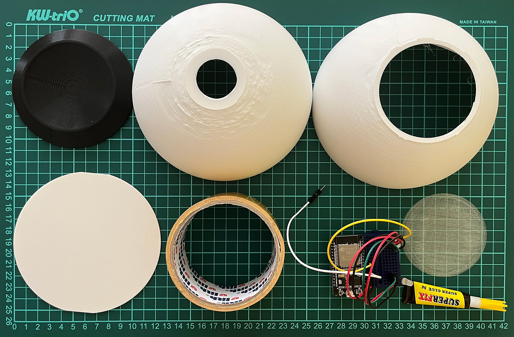
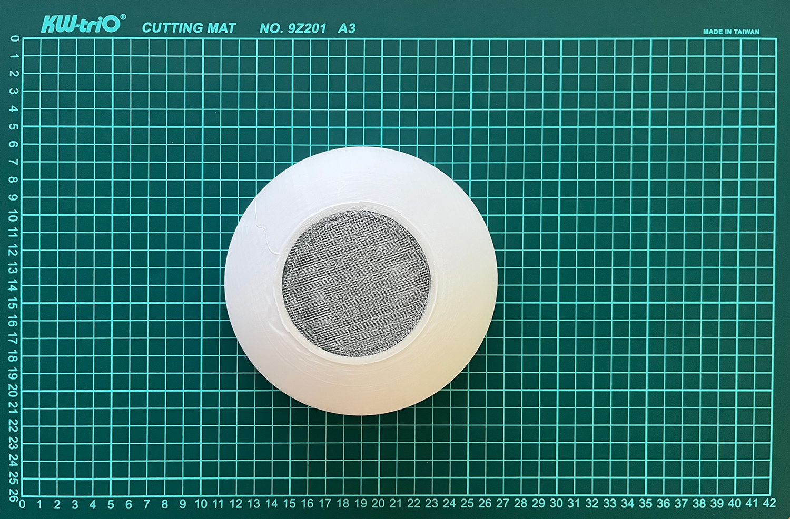
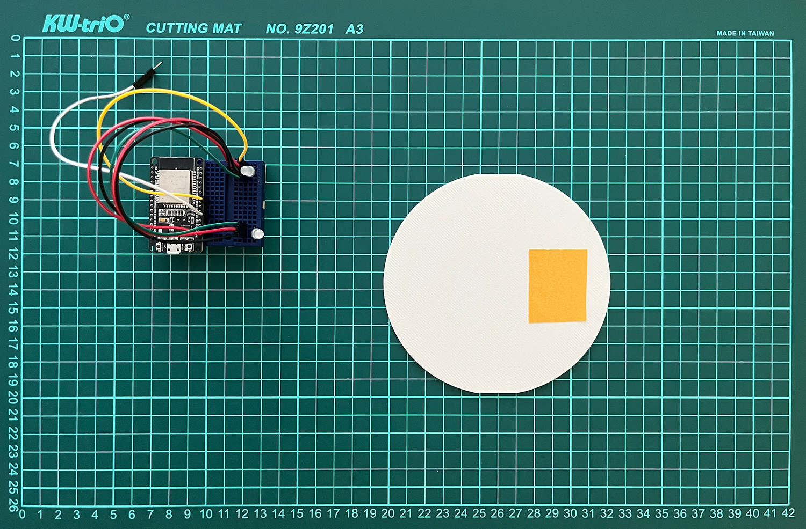
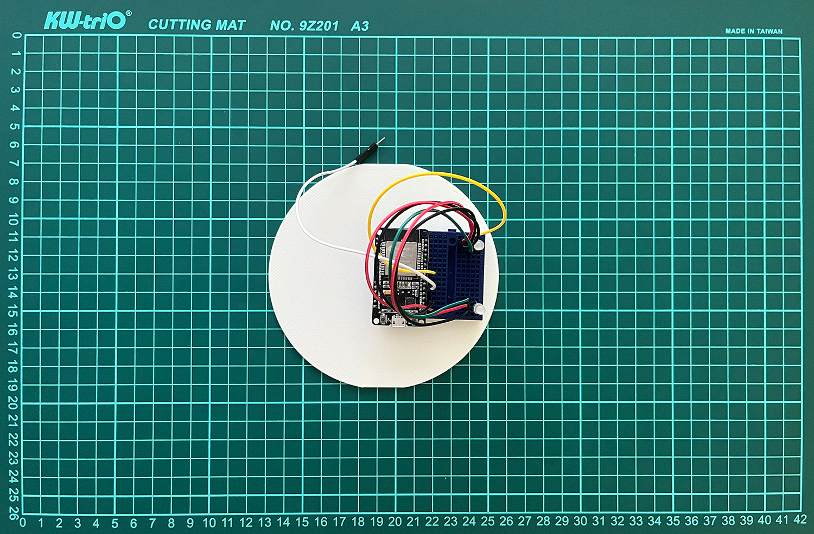
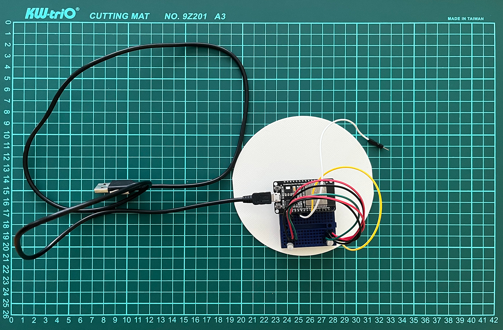

Vytvoř si svého Puffa
Nástroje
○ Vteřinové lepidlo
○ Oboustranná lepící páska
Součástky k výrobě
○ Yo-Yo machine - Light touch
○ 3D Model - Top half
○ 3D Model - Bottom half
○ 3D Model - Eye
○ 3D Model - Disk
○ 3D Model - Stand
○ USB Kabel
○ Suchý zip
○ Dekorace
○ Alobal
Krok 1 - Tvorba Puffu
Připrav si všechny nástroje a součástky.
{kind=link}
Krok 2 - Spoj Top half with Eye
Aplikuj vteřinové lepidlo na hrany součásti Eye a přilep k součásti Top half.
{kind=link}
Krok 3 - Přilep Light Touch k Desk
Přilep oboustrannou lepící pásku na spodek součásti Light Touch a tu přilep k součásti Desk.
 {kind=link}
{kind=link}
Krok 4 - Připoj USB Kabel
Vezmi USB Kabel a připoj jej k součásti Light Touch.
{kind=link}
Krok 5 - Vlož Desk
Vezmi připravenou součást Desk s Light Touch a USB Kabelem a vlož jej mezi držadla v součásti Bottom half.
USB Kabel a malý drátek prostrč dírou v součásti Bottom half.
{kind=link}
Krok 6 - Dokonči Puffa
Vezmi součást Bottom half a spoj se součásti Top half.
Poté polož sféru na součást Stand.
{kind=link}
Krok 7 - Ozdob Puffa
Přilep suchý zip na vrchní část sféry.
Jednu část suchého zipu na součást Top half a druhou na součást Bottom half.
{kind=link}
{kind=link}
Poté můžeš spojit zipi s dekoracemi. Můžeš využít bavlnu, kožešinu, látky...
Je to na tobě jaké materiály zvolíš pro svůj jedinečný design.
{kind=link}
Vytvoř "ocas" z alobalu, vlož jej do díry a zapíchni do něj drátek.
Otestuj jestli funguje přepínání světla na "ocasu".
{kind=link}
Krok 8 - Připraveno k použití
Puff je připraven k použití.
Užíj si svého Puffa!
Můžeš využít tyto pravidla pro posílání barevných signálů:
○ Červená - Jsem naštvaný
○ Žlutá - Cítím se trapně
○ Zelená - Jsem šťastný
○ Modrá - Jsem smutný
○ Růžová - Cítím se hravě
Nebo si můžeš vytvořit vlastní pravidla a význam pro osobní prožitek,

Make your Puff
Tools
○ Superglue
○ Double-sided tape
Parts per device
○ Yo-Yo machine - Light touch
○ 3D Model - Top half
○ 3D Model - Bottom half
○ 3D Model - Eye
○ 3D Model - Disk
○ 3D Model - Stand
○ USB Cable
○ Velcro
○ Decoration
○ Tin foil
Step 1 - Building the Puff
Gather the parts and tools shown in the picture.
Step 2 - Connect Top half with Eye
Apply Superglue to the edge of the Eye and stick it to Top Half.
Step 3 - Stick Light Touch to Desk
Use your Double-sided tape to the bottom of the Light Touch and add it to the Desk.
Step 4 - Connect USB Cable
Take your USB Cable and put it in the input of Light Touch.
Step 5 - Insert Desk
Take a prepared Desk with Light Touch and USB Cable and insert it between the holders in the Bottom half.
USB Cable and Wire push through the hole in the Bottom half.
Step 6 - Finish Puff
Take the Bottom half and join it with the Top half.
Then put the sphere on the Stand.
Step 7 - Add decoration
Stick Velcro on the upper side of the sphere.
One part of Vecro to the Top half and the second to the Bottom half.
Then you can zip up the decoration. You can use some cotton, fur, fabric...
It’s up to you what you choose for your unique design.
Then make a "tail" from tin foil, put in the hole, and insert the Wire in.
Then test if the tin foil works.
Step 8 - Ready to use
The build is finished and ready to use.
Enjoy your Puff!
You can use this machine with color rules:
○ Red - Angry
○ Yellow - Embarrassed
○ Green - Happy
○ Blue - Sad
○ Magenta - Playful
But you are completely free to choose your own meaning for colors and improve your experience.